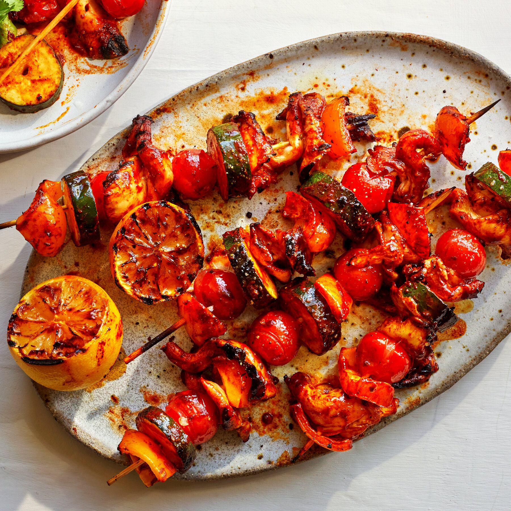
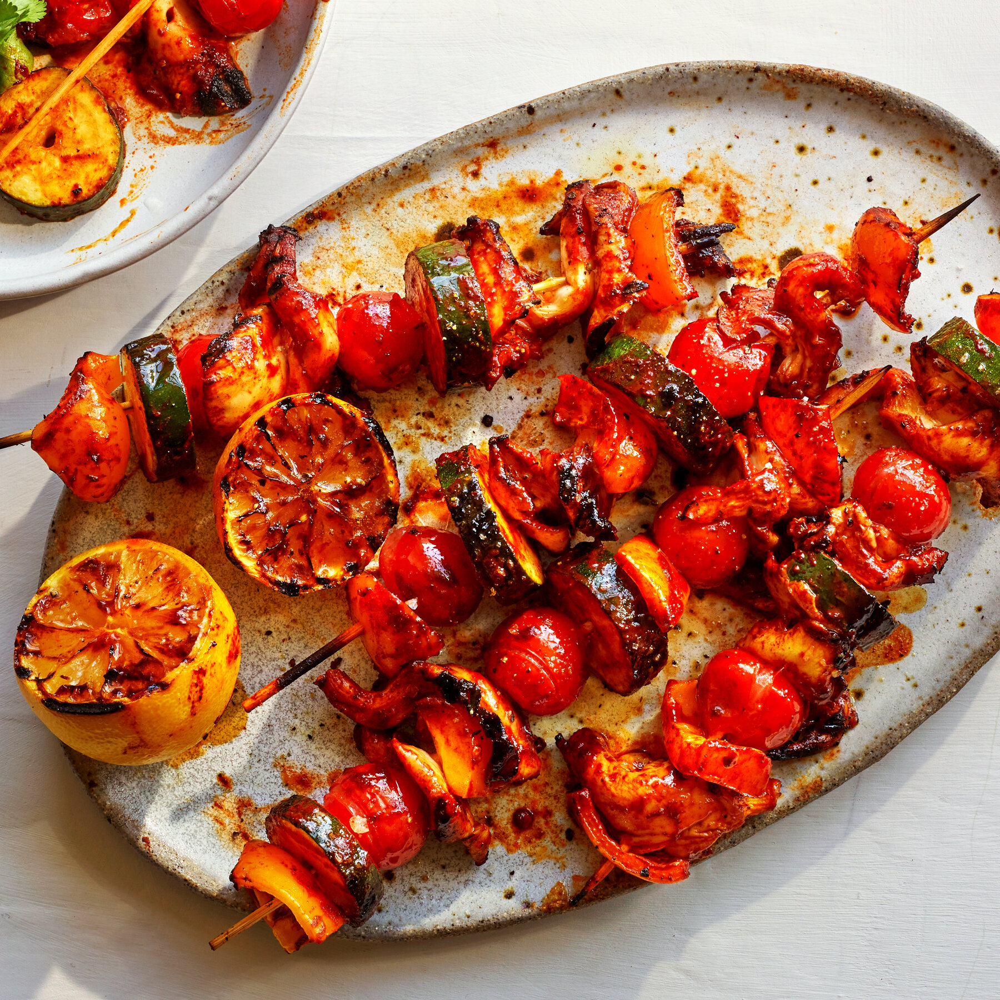

Quick Vegetarian Recipes
Looking for delicious vegetarian meals that are quick and easy to prepare? You've come to the right place! These recipes are designed to help you whip up tasty and nutritious dishes in no time, perfect for busy weeknights or a quick lunch.
From hearty salads to flavorful stir-fries, each recipe is packed with fresh ingredients and bursting with flavor. Enjoy your cooking experience and indulge in healthy eating!